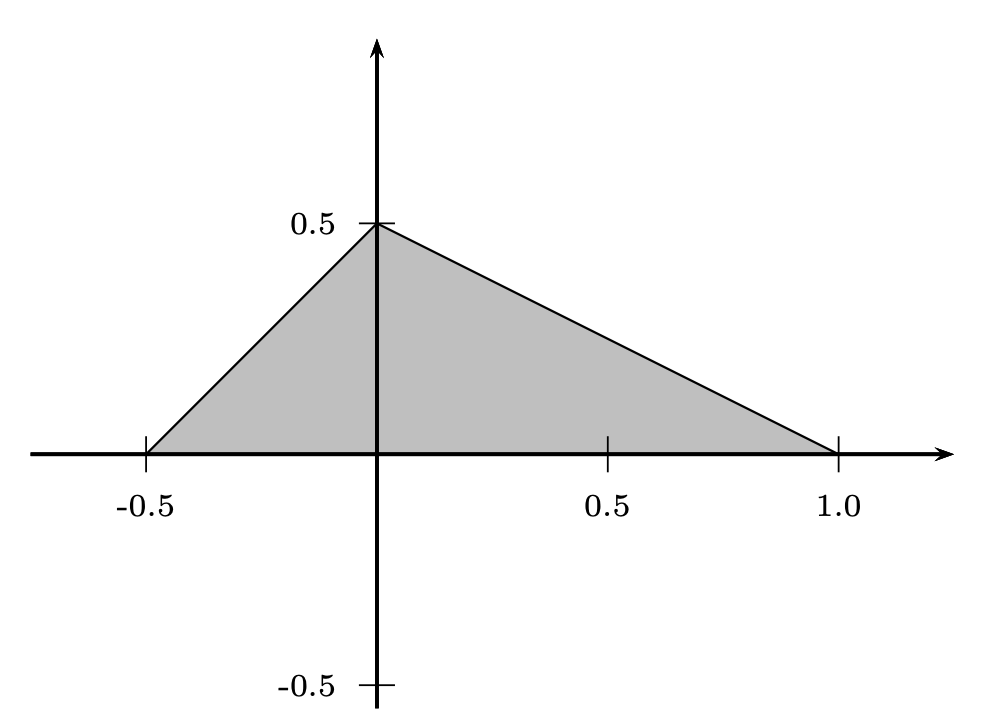
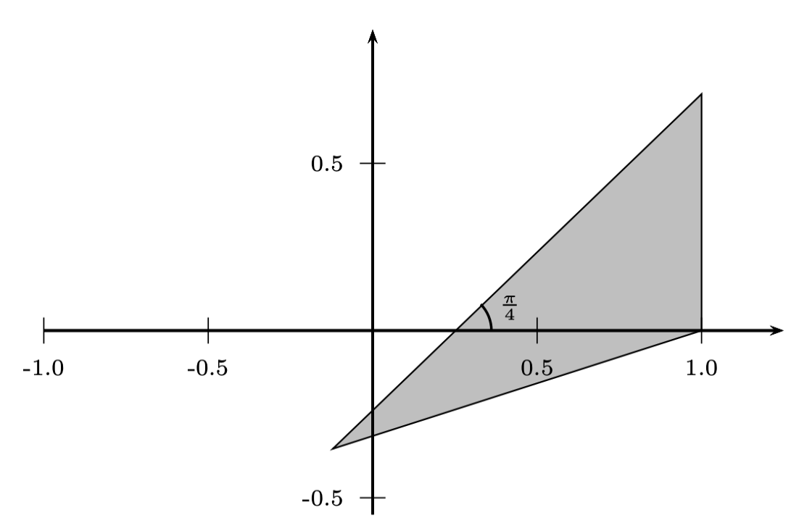
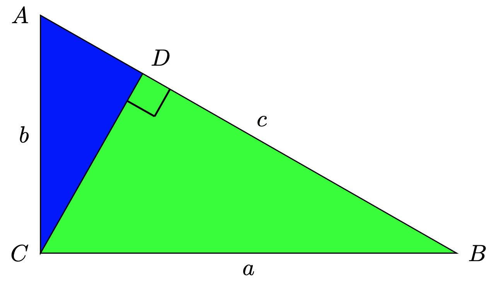

02 - Transformations du plan
Question 1
Soit l’application affine dont la représentation analytique est donnée par
\[ w\left(\begin{array}{c}x\\y\end{array}\right) = \left(\begin{array}{cc}1&-1\\2&0\end{array}\right) \left(\begin{array}{c}x\\y\end{array}\right) + \left(\begin{array}{c}-1\\1\end{array}\right). \]
Déterminez l’image du rectangle plein \(\left\{(x,y) : x \in [0,2] ~\text{et}~y \in [0,1]\right\}\) par \(w\).
Déterminez l’image par \(w\) du triangle plein dont les sommets sont donnés par \[A = (1,1), B = (0,0) ~\text{et}~ C = (-1,1).\]
Solution.
C’est un parallélogramme (plein) de sommets \((-2,1), (-1,1), (1,5)\) et \((0,5).\)
C’est un triangle (plein) de sommets \((-1,3), (-1,1)\) et \((-3,-1).\)
Question 2
Trouvez l’expression analytique de l’isométrie qui envoie le triangle de la figure 1 sur celui de la figure 2.


Solution. L’expression analytique d’une telle isométrie peut être exprimée de la façon suivante :
\[ w\left(\begin{array}{c}x\\y\end{array}\right) = \left(\begin{array}{cc}-\frac{\sqrt{2}}{2}&\frac{\sqrt{2}}{2}\\ -\frac{\sqrt{2}}{2}&-\frac{\sqrt{2}}{2}\end{array}\right) \left(\begin{array}{c}x\\y\end{array}\right) + \left(\begin{array}{c}1-\frac{\sqrt{2}}{4}\\\frac{\sqrt{2}}{4}\end{array}\right). \]
Question 3
Trouvez l’expression analytique d’une application affine qui envoie le triangle de sommets \(A = (-11,3),B = (1,12)\) et \(C = (-1,14)\) sur le triangle de sommets \(P = (90,-68), Q = (69,-53)\) et \(R = (83,-59).\) On sous-entend ici que le point \(A\) est envoyé sur \(P\), le point \(B\) sur \(Q\) et le point \(C\) sur \(R.\) Il serait souhaitable d’utiliser un outil informatique pour faire les calculs.
Solution. L’expression analytique de la transformation cherchée est :
\[ w\left(\begin{array}{c}x\\y\end{array}\right) = \left(\begin{array}{cc}-4&3\\2&-1\end{array}\right) \left(\begin{array}{c}x\\y\end{array}\right) + \left(\begin{array}{c}37\\-43\end{array}\right). \]
Imposition des conditions
Il faut déterminer \(a, b, c, d, e\) et \(f\) tels que la transformation
\[ w\left(\begin{array}{c}x\\y\end{array}\right) = \left(\begin{array}{cc}a & b \\ c & d\end{array}\right) \left(\begin{array}{c}x\\y\end{array}\right) + \left(\begin{array}{c}e\\f\end{array}\right) \]
soit telle que \(w(A) = P\), \(w(B) = Q\) et \(w(C) = R\). Ces trois conditions se traduisent :
\[ w\left(\begin{array}{c}-11\\3\end{array}\right) = \left(\begin{array}{cc}a & b \\ c & d\end{array}\right) \left(\begin{array}{c}-11\\3\end{array}\right) + \left(\begin{array}{c}e\\f\end{array}\right) = \left(\begin{array}{c}90\\-68\end{array}\right), \]
\[ w\left(\begin{array}{c}1\\12\end{array}\right) = \left(\begin{array}{cc}a & b \\ c & d\end{array}\right) \left(\begin{array}{c}1\\12\end{array}\right) + \left(\begin{array}{c}e\\f\end{array}\right) = \left(\begin{array}{c}69\\-53\end{array}\right), \]
\[ w\left(\begin{array}{c}-1\\14\end{array}\right) = \left(\begin{array}{cc}a & b \\ c & d\end{array}\right) \left(\begin{array}{c}-1\\14\end{array}\right) + \left(\begin{array}{c}e\\f\end{array}\right) = \left(\begin{array}{c}83\\-59\end{array}\right), \]
qui, sous forme d’équations, s’écrivent :
\[ \begin{align} -11a + 3b + e &= 90, \\ -11c + 3d + f &= -68, \\ a + 12b + e &= 69, \\ c + 12d + f &= -53, \\ -a + 14b + e &= 83, \\ -c + 14d + f &= -59. \end{align} \]
Résolution des systèmes
On considère d’abord le système formé des équations ne contenant que les nombres \(a,b\) et \(e\) :
\[ \begin{aligned} -11a + 3b + e &= 90,\\ a + 12b + e &= 69,\\ -a + 14b + e &= 83. \end{aligned} \]
Par la suite, on traite le système formé des équations ne contenant que les nombres \(c,d\) et \(f\) :
\[ \begin{align} -11c + 3d + f &= -68,\\ c + 12d + f &= -53,\\ -c + 14d + f &= -59. \end{align} \]
Le premier système nous donne \(a = -4\), \(b = 3\) et \(e = 37\), et le second conduit à \(c = 2\), \(d = -1\) et \(f = -43\). Ainsi, la transformation cherchée est :
\[ w\left(\begin{array}{c}x\\y\end{array}\right) = \left(\begin{array}{cc}-4 & 3 \\ 2 & -1\end{array}\right) \left(\begin{array}{c}x\\y\end{array}\right) + \left(\begin{array}{c}37\\-43\end{array}\right). \]
Question 4
Trouvez l’image du point de coordonnées \((x,y)\) par une homothétie de centre \((h,k)\) et de rapport \(c\). (Suggestion : translatez d’abord le point \((x,y)\) selon le vecteur \((-h,-k)\) avant d’effectuer l’homothétie, puis translatez le point obtenu selon le vecteur \((h,k)\).)
Solution. C’est le point de coordonnées \(\left(cx+h(1-c), cy+k(1-c)\right)\).
Question 5
Trouvez deux similitudes qui envoient le segment \(\mathcal{S}\), reliant les points \(P = (-3,-1)\) et \(Q = (-1,1)\), sur le segment \(\mathcal{T}\), reliant les points \(A = (3,1)\) et \(B = (2,2)\). On sous-entend ici que le point \(P\) est envoyé sur \(A\), et le point \(Q\) sur \(B\).
Solution. Les expressions analytiques des deux similitudes cherchées sont les suivantes :
\[ w_1\left(\begin{array}{c}x\\y\end{array}\right) = \left(\begin{array}{cc}0&-\frac{1}{2}\\\frac{1}{2}&0\end{array}\right) \left(\begin{array}{c}x\\y\end{array}\right) + \left(\begin{array}{c}\frac{5}{2}\\\frac{5}{2}\end{array}\right), \]
\[ w_2\left(\begin{array}{c}x\\y\end{array}\right) = \left(\begin{array}{cc}-\frac{1}{2}&0\\0&\frac{1}{2}\end{array}\right) \left(\begin{array}{c}x\\y\end{array}\right) + \left(\begin{array}{c}\frac{3}{2}\\\frac{3}{2}\end{array}\right). \]
Question 6
Trouvez l’expression analytique de la transformation affine correspondant à la projection orthogonale sur la droite d’équation \(y = x\).
Solution. Si \(w\) désigne la projection orthogonale sur la droite d’équation \(y = x\), alors
\[ w\left(\begin{array}{c}x\\y\end{array}\right) = \left(\begin{array}{cc}\frac{1}{2}&\frac{1}{2}\\\frac{1}{2}&\frac{1}{2}\end{array}\right) \left(\begin{array}{c}x\\y\end{array}\right). \]
Question 7
Soient \(a,b,r\in]0,\infty[\), et \(e,f\in\mathbb{R}\). Considérons l’application affine \(w:\mathbb{R}^2\to \mathbb{R}^2\) dont l’expression analytique est donnée par
\[ w\left(\begin{array}{c}x\\y\end{array}\right) = \left(\begin{array}{cc}a&0\\0&b\end{array}\right) \left(\begin{array}{c}x\\y\end{array}\right) + \left(\begin{array}{c}e\\f\end{array}\right). \]
Quelle est l’équation du lieu des points de \(\mathbb{R}^2\) correspondant à l’image du cercle d’équation \(x^2 + y^2 = r^2\) par \(w\) ?
Solution. Il s’agit d’une ellipse d’équation
\[ \frac{(x-e)^2}{(ar)^2} + \frac{(y-f)^2}{(br)^2} = 1, \]
c’est-à-dire une ellipse centrée au point \((e,f)\) dont l’axe horizontal est de longueur \(2ar\) et dont l’axe vertical est de longueur \(2br\).
Question 8
On considère le triangle rectangle \(\mathcal{T}:=\Delta BAC\) illustré ci-dessous dont les côtés sont de longueur \(a, b\) et \(c\). Le triangle \(\mathcal{T}\) est l’union des triangles rectangles \(\mathcal{T}_1:=\Delta ADC\) et \(\mathcal{T}_2:=\Delta BDC\).

Montrez que \(\mathcal{T}_1\) et \(\mathcal{T}_2\) sont semblables à \(\mathcal{T}\).
D’après (a), il existe des similitudes \(w_1\) et \(w_2\) telles que \(w_1(\mathcal{T})=\mathcal{T}_1\) et \(w_2(\mathcal{T})=\mathcal{T}_2\). Soient \(k_1\) et \(k_2\), les rapports de similitude de \(w_1\) et \(w_2\) respectivement. Déterminez les valeurs de \(k_1\) et \(k_2\).
Solution. On trouve que \(k_1 = \frac{a}{c}\) et \(k_2 = \frac{b}{c}\).
Montrez que si \(\mathcal{A}\) et \(\mathcal{B}\) sont deux triangles semblables tels que \(\mathcal{B}=w(\mathcal{A})\), où \(w\) est une similitude de rapport \(k\), alors Aire(\(\mathcal{B}\))=\(k^2\)Aire(\(\mathcal{A}\)).
Désignons par \(s, s_1\) et \(s_2\) les aires des triangles \(\mathcal{T}, \mathcal{T}_1\) et \(\mathcal{T}_2\) respectivement. Utiliser ce qui précède, et l’égalité \(s = s_1 + s_2\) pour démontrer le théorème de Pythagore.
Trouvez un ensemble \(\mathcal{E}\) tel que \(w_1(\mathcal{E})\cup w_2(\mathcal{E})=\mathcal{E}\).
Solution. On vérifie que \(\mathcal{E} = \mathcal{T}\) fait l’affaire.